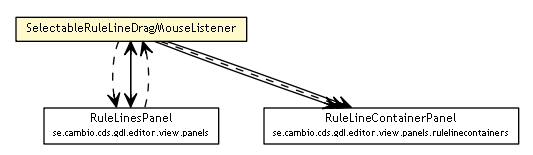

se.cambio.cds.gdl.editor.view.listeners
Class SelectableRuleLineDragMouseListener

java.lang.Object
 java.awt.event.MouseAdapter
se.cambio.cds.gdl.editor.view.listeners.SelectableRuleLineDragMouseListener
java.awt.event.MouseAdapter
se.cambio.cds.gdl.editor.view.listeners.SelectableRuleLineDragMouseListener
- All Implemented Interfaces:
- MouseListener, MouseMotionListener, MouseWheelListener, EventListener
public class SelectableRuleLineDragMouseListener
- extends MouseAdapter
| Methods inherited from class java.lang.Object |
clone, equals, finalize, getClass, hashCode, notify, notifyAll, toString, wait, wait, wait |
SelectableRuleLineDragMouseListener
public SelectableRuleLineDragMouseListener(RuleLinesPanel ruleLinesPanel)
mousePressed
public void mousePressed(MouseEvent me)
- Specified by:
mousePressed in interface MouseListener- Overrides:
mousePressed in class MouseAdapter
mouseDragged
public void mouseDragged(MouseEvent me)
- Specified by:
mouseDragged in interface MouseMotionListener- Overrides:
mouseDragged in class MouseAdapter
mouseReleased
public void mouseReleased(MouseEvent me)
- Specified by:
mouseReleased in interface MouseListener- Overrides:
mouseReleased in class MouseAdapter
getRuleLineContainer
public static RuleLineContainerPanel getRuleLineContainer(Component component)
Copyright © 2013 Cambio. All Rights Reserved.